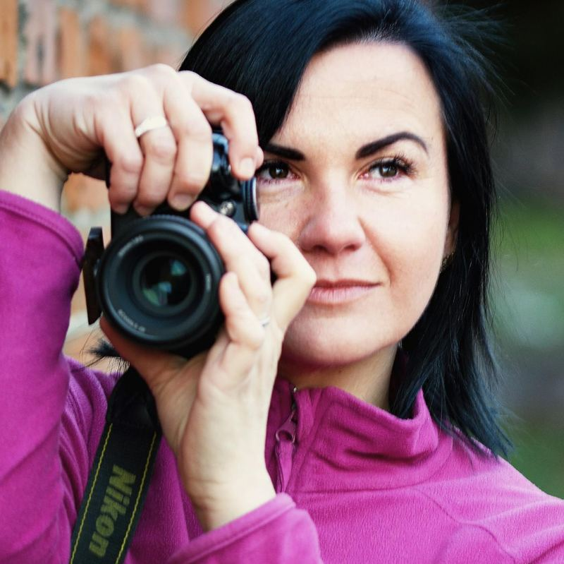
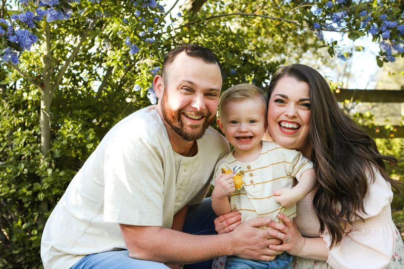
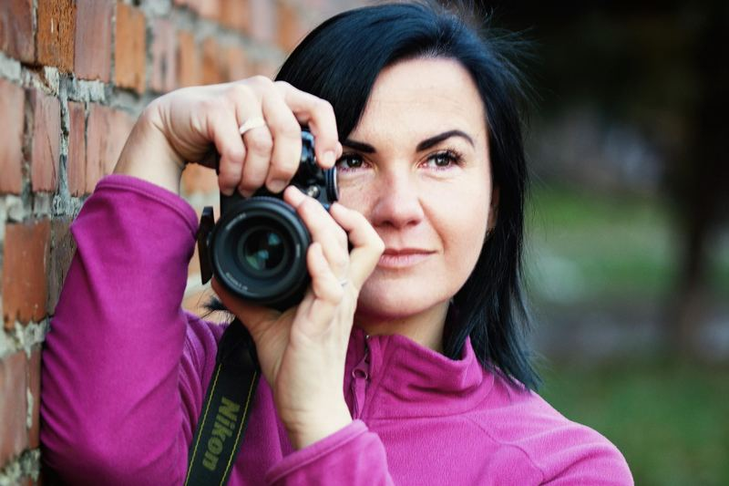

Fotím Nikonem, ale srdcem
Miroslava Šumníková, fotografka z Opavy. Fotím rodiny, děti, páry i portréty, venku i u Vás doma.

Vyberte si snímek z archu
Jako na kontaktním archu: klepněte na políčko a zakroužkuji ho. Fotky jsou zatím ilustrační.


Fotky, ke kterým se budete vracet
Jmenuji se Miroslava Šumníková a fotím v Opavě a okolí. Chci, abyste se před foťákem cítili dobře a na fotkách byli opravdu Vy.
Napište mi, co si představujete, a domluvíme místo, čas i to, kolik fotek dostanete.
Fotím v Opavě, ve Vávrovicích a v okolí.
Domluvit focení